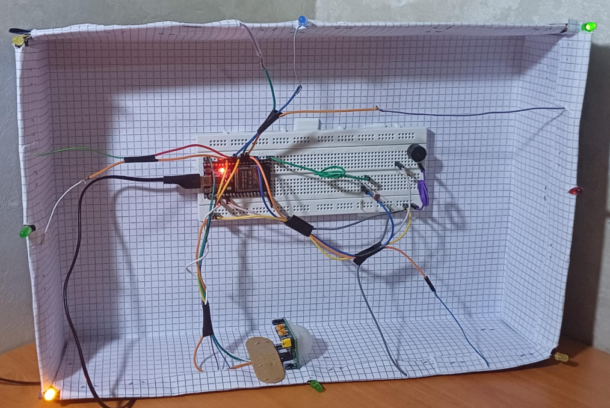

Un système domotique intelligent doté d'un contrôle Bluetooth et d'une synchronisation dynamique des LEDs (IoT).
La topologie physique du prototype est modélisée sous forme d'une grille 3x3. Chaque LED correspond à un GPIO de l'ESP32 et possède un emplacement précis sur la maquette.
